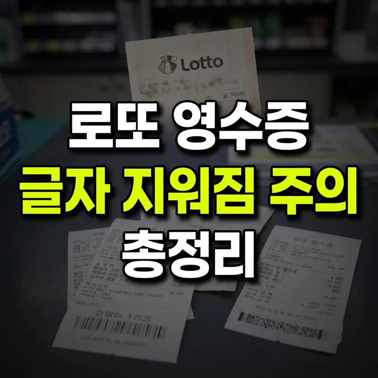

로또 복권 용지 보존 및 관리법: 감열지 훼손 방지와 당첨금 미수령 예방 체크리스트
로또 용지는 열과 마찰, 유분에 약한 감열지입니다. 서늘하고 건조한 곳에 단독으로 보관하고, 추첨 직후 바로 당첨 여부를 확인하는 습관이 가장 안전합니다.

당첨된 복권, 알고 보니 버려지거나 지워진다면?
매주 토요일 추첨 방송이 끝난 후, 발행받은 로또 용지를 꺼내어 번호를 맞춰보는 순간은 누구나 긴장감과 설렘을 느끼는 시간입니다. 간혹 3등이나 4등, 혹은 그 이상의 당첨 번호가 맞았음에도 불구하고 지갑 속에 무심코 넣어두었다가 용지가 훼손되거나 인쇄 내용이 지워져 당첨금을 받지 못하는 안타까운 일이 발생하곤 합니다.
많은 사람들이 로또 용지가 일반 종이와 다르지 않을 것이라 생각하지만, 실물 복권 용지는 특수한 재질로 만들어져 있어 환경에 매우 민감합니다. 이번 글에서는 로또 복권 용지가 어떤 재질로 이루어져 있으며, 왜 쉽게 훼손되는지, 그리고 당첨금 수령 전까지 안전하게 보관하는 실전 요령과 체크리스트를 자세히 알아보겠습니다.
로또 용지 감열지의 특성과 훼손 원리
우리가 흔히 접하는 영수증이나 로또 복권 용지는 일반 프린터 용지가 아니라 특수 화학 처리가 된 '감열지(Thermal Paper)'를 사용합니다.
감열지는 열을 가하면 화학 반응을 일으켜 검은색 글자가 나타나도록 설계되어 있어 잉크 카트리지 없이도 빠르게 인쇄할 수 있다는 장점이 있습니다. 하지만 바로 이 감열 특성 때문에 다음과 같은 환경에서 훼손이 발생합니다.
- 열과 직사광선: 여름철 자동차 내부 대시보드나 직사광선이 내리쬐는 곳에 복권을 두면, 용지 전체가 열을 받아 어둡게 변색되면서 인쇄된 번호와 바코드가 알아보기 어려워질 수 있습니다.
- 마찰과 압력: 지갑 속이나 주머니에 다른 카드와 함께 겹쳐서 오래 넣고 다니면, 표면 마찰과 압력에 의해 글자가 지워지거나 번지는 현상이 나타납니다.
- 화학 물질 노출: 손에 묻은 핸드크림, 향수, 유분, 혹은 영수증 등에 포함된 가소제 성분과 접촉하면 감열지의 화학 코팅이 손상되어 인쇄면이 빠르게 마모됩니다.
훼손된 복권 용지, 농협은행에서 확인 가능한가요?
만약 복권 용지가 일부 훼손되었거나 바코드가 스캔되지 않는 상황이 발생하면 당황하기 쉽습니다. 하지만 복권이 완전히 소실된 것이 아니라 형태가 남아 있다면 확인해 볼 방법이 있을 수 있습니다.
- 식별 가능 여부: 복권의 발행 번호, 바코드, 그리고 추첨 회차 정보 중 일부가 남아 있어 발행기관의 시스템으로 진위 여부를 판독할 수 있다면 당첨금 지급 심사가 가능할 수 있습니다. 가능 여부는 복권의 훼손 정도에 따라 달라집니다.
- 농협은행에 문의하기: 훼손된 복권은 판매점 단말기에서 읽히지 않을 수 있습니다. 이럴 때는 용지를 그대로 가지고 농협은행 지점(1등은 본점)에 문의해 확인이 가능한지 알아보세요. 지역 단위 농협은 로또 당첨금 지급 업무를 하지 않습니다.
- 실물 보존의 중요성: 복권 조각이 너무 잘게 찢어졌거나 화재 등으로 인해 식별이 불가능할 정도로 탄 경우에는 당첨을 증명할 방법이 없으므로, 평소 보관 단계에서부터 각별한 주의가 필요합니다.
실전 복권 보관 및 관리 체크리스트
당첨의 기회를 눈앞에서 놓치는 일을 방지하기 위해 일상에서 실천할 수 있는 보관 수칙을 정리해 드립니다.
- 서늘하고 건조한 곳에 두기: 복권은 지갑 속 깊은 곳이나 가방 안쪽의 포켓에 단독으로 넣고, 열이 발생하는 전자기기나 직사광선을 피해 보관합니다.
- 투명 비닐 봉투 활용: 다른 영수증이나 기름기 있는 물건과 닿지 않도록 별도의 비닐이나 전용 카드 지갑에 넣어두는 것이 안전합니다.
- 추첨일 직후 즉시 확인: 당첨 결과가 발표되면 미루지 말고 가급적 빠른 시일 내에 QR코드나 번호 대조를 통해 당첨 여부를 확인하고, 당첨된 용지는 뒷면에 서명한 후 안전한 장소에 따로 보관합니다.
복권을 구매한 날부터 확인할 때까지 서늘한 곳에 따로 두는 것만으로도 대부분의 훼손은 막을 수 있습니다.
· 로또 용지는 열과 마찰에 민감한 감열지로 만들어져 직사광선이나 고온에 노출되면 글자가 쉽게 지워집니다.
· 용지가 훼손되었더라도 바코드나 발행 번호 등 식별 정보가 남아 있다면 농협은행에 문의해 확인받을 수 있는지 알아볼 수 있습니다.
· 복권은 지갑 속 단독 공간이나 서늘한 곳에 보관하고, 추첨 직후 빠르게 당첨 여부를 확인하는 습관이 중요합니다.
이 글의 기준과 예시는 2026년 10월 기준입니다. 법령이나 제도가 바뀌면 내용이 달라질 수 있으니, 신청·신고·계약 전에는 해당 기관에서 최신 기준을 확인하세요. 계산 결과와 설명은 참고용입니다.
🔮 다음 글 예고
다음 글에서는 복권기금이 어떻게 조성되고 어디에 쓰이는지 다룹니다.